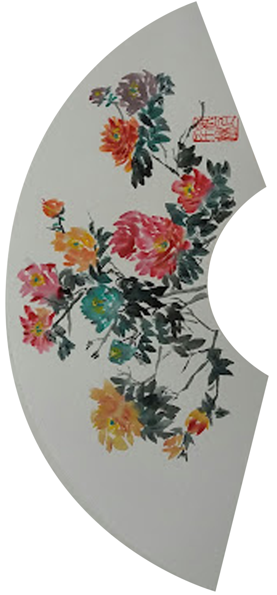

L'Empire Du Papier Vivant
La peinture chinoise

L'art pictural traditionnel exercé en Chine depuis la préhistoire, on l'a retrouvée peinte sur les grottes et utilisée comme peinture murale pour les palais et les temples. Elle est pratiquée plus généralement sur des rouleaux ou des éventails de soie ou de papier.
La peinture chinoise est constituée majoritairement de :
- Paysages et peintures narratives
- Fleurs et oiseaux
- Personnages et Animaux
- Peinture religieuse
Ses Oeuvres :